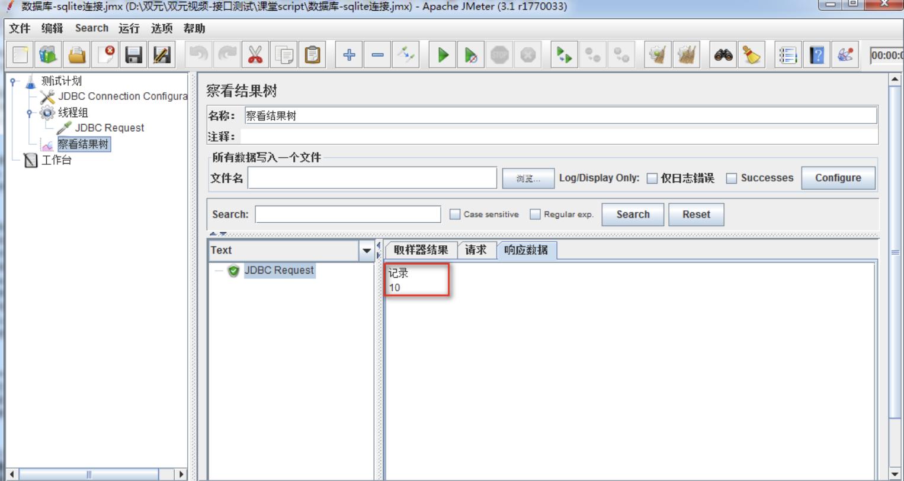
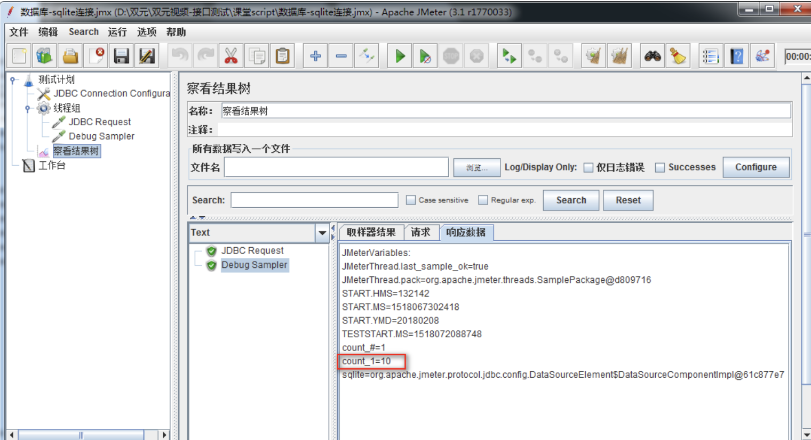
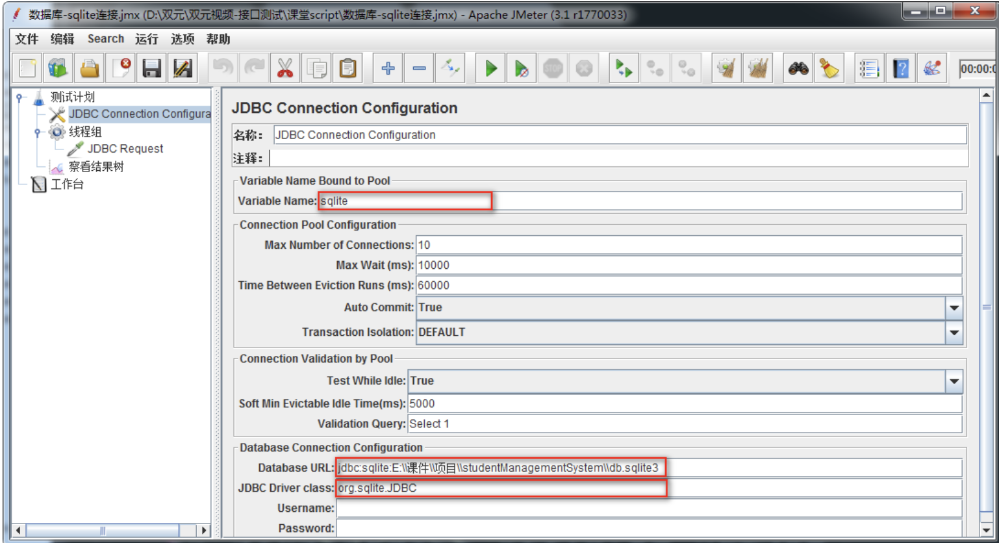
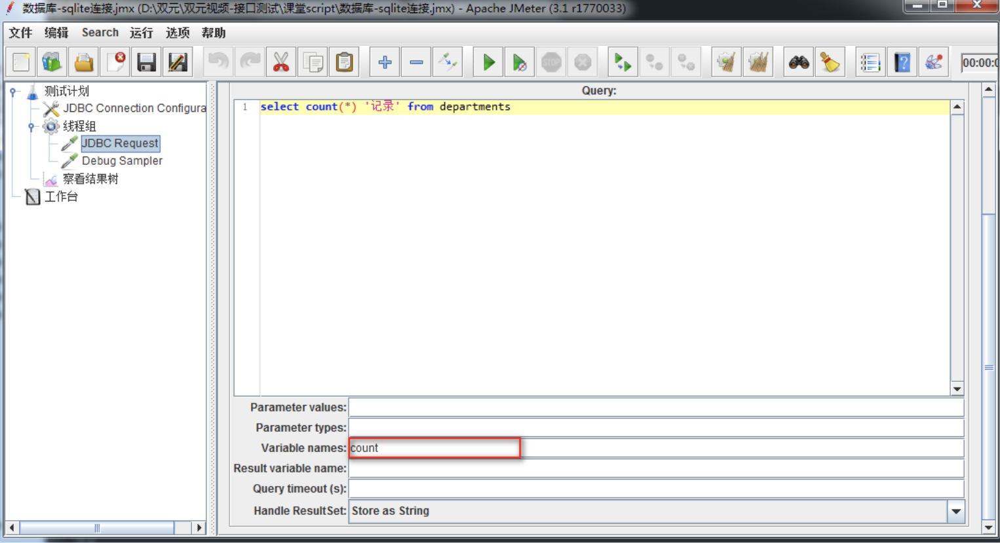
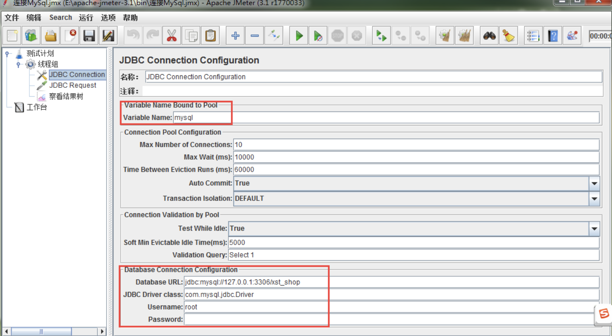

Jmeter 从数据库中获取数据
目标
- 掌握使用Jmeter从数据库获取数据的方法；
为什么要使用Jmeter从数据库中获取数据？
1. 我们测试的软件项目所有的数据都存储在数据库
1. 思路分析
1) 连接数据库
2) 发送sql语句请求进行增删改查
3) 查看执行sql语句后的数据
4) 获取执行sql语句后的数据
注意: Jmeter本身不具备直连数据库的功能,必须整合具备此功能的第三方实现.
2. 案例
使用Jmeter连接学生管理项目数据库，统计学院资源表中记录数；
数据库名：db.sqlite3
数据库位置：项目\studentManagementSystem\
学院数据库表名：departments
3. 效果图

获取执行sql语句后的数据

4. 操作步骤
4.1 连接数据
添加数据库jar包, 添加数据库驱动

配置连接信息


4.2 发送sql语句请求
1) 添加-线程组
2) 添加-JDBC Request
4.3 查看执行sql语句响应数据
1) 添加-察看结果树
4.4 获取执行sql语句后的数据
1) 添加-Debug Sampler
5. 参数详解
5.1 JDBC Connection Configuration 参数详解

1. Variable Name:数据库池名称【JDBC请求时要引用】
2. Database URL:jdbc:sqlite:E:\\课件\\项目\\studentManagementSystem\\db.sqlite3
1) jdbc:sqlite:通过JDBC驱动连接sqlite数据库固定格式
2) E:\\课件\\项目\\studentManagementSystem\\db.sqlite3：数据路径和数据库名
3. JDBC Driver class：org.sqlite.JDBC（sqlite驱动包内sqlite驱动的路径位置）
4. Username:(连接数据库用户名，如实填写,我们项目sqlite数据库用户名默认为空)
5. Password:(数据库密码，如实填写，如果密码为空不写)
5.2 jdbc参数详解

JDBC Request 参数：Variable names 设置图

1. Variable Name：数据库连接池的名字，需要与JDBC Connection Configuration的Variable Name【保持一致】
2. Query Type:Select Statement、Update Statement
1) Select Statement:查询语句时使用
2) Update Statement:(新增、更新、删除)语句时使用
3. Query: 填写的sql语句未尾不要加“;”
4. Variable names：count 保存sql语句返回结果的变量名;
练习
1. 通过Jmeter中JDBC请求使用SQL语句-新增1条学院
2. 通过Jmeter中JDBC请求使用SQL语句-更新新增学院
3. 通过Jmeter中JDBC请求使用SQL语句-删除更新学院
6. 数据库-总结：
1. JDBC驱动包
2. 数据库连接池配置
3. JDBC请求
4. Degbeg Sampler
【扩展】对不同类型数据库配置
1. 针对企业内常用数据库如何基于Jmeter连接做个扩展
2. 数据库主要有：Mysql、Oracle
3. 各类型不同之处：
1. 数据库驱动包各不相同
2. 数据库连接池配置各不同
1. MySQL数据库
1. MySQL驱动包
2. 数据库池配置
mysql-jdbc连接配置

注意
1. 127.0.0.1：为数据库服务器IP地址(根据实际项目数据库服务器IP更改)
2. 3306：为数据库端口号（根据项目实际实际数据库端口更改）
3. xst_shop：为数据库名称（根据项目实际数据库名更改）
4. Username：为登陆数据库用户名
5. password: 为登陆数据库密码
6. 其他为固定格式，参照配置图填写
2. Oracle数据库
1. Oracle驱动包
2. 数据库池配置
oracle jdbc连接配置

注意
1. 10.245.145.45:为数据库服务器IP地址(根据实际IP地址填写)
2. 1521：为端口号(根据项目端口更改)
3. orcl：为数据库名称(根据实际项目数据库名称填写)
4. Username：为登陆数据库用户名
5. password: 为登陆数据库密码
6. 其他为固定格式，参照配置图填写